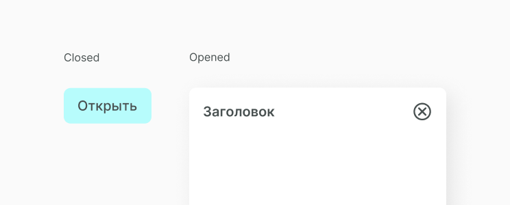

Popup
Popup мы называем всплывающее модальное окно, с которым пользователь должен обязательно как либо провзаимодействовать. Он может его или закрыть или сделать действие, которое предлагает в popup. Этот компонент выступает в роли обертки в которую мы заворачиваем такие компоненты как alert и sing in.
Структура компонента
Popup состоит из поля, которое перекрывает экран и самой модальной области с контентом. Еще используем для примера кнопку, которая собственно и вызывает popup. Вот как это выглядит.
На экране мы видим кнопку button при нажатии на которую появляется popup.

Внутри popup состоит из header, в него входит заголовок и кнопка закрытия окна в виде icon, а также пустая область в которую передаем необходимый контент.

Состояние компонента
Popup или закрыт или открыт. Мы добавляем кнопку только для того, чтобы показать принцип работы popup, так он может вызываться при любом пользовательском действии и как информационное окно и как функциональное.
Реализация
Для начала в папке спроекта создаем новую, в неё кладем файлы S_Popup.jsx и S_Popup.css. Затем описываем функционал popup и его структуру. Получаем следующий код.
Popup содержит icon Q_Icon close, которая лежит в отдельной папке image в файле Q_Icon.css. В нем мы храним все иконки, которые нужны для различных компонентов, а их фон и размер задаем в файле со стилем всего chip. Это мы покажем в структуре CSS.
import React, { Component } from 'react'
import A_Button from '../../atoms/A_Button/A_Button.jsx'
import './S_Popup.scss'
import '../../quarks/Q_Icon.scss'
export default class S_Popup extends Component {
constructor(props) {
super(props)
this.state = {
showPopup: false
}
this.openPopup = this.openPopup.bind(this)
this.closePopup = this.closePopup.bind(this)
}
openPopup() {
this.setState((prevState) => ({
...prevState,
showPopup: true
}))
}
closePopup() {
this.setState((prevState) => ({
...prevState,
showPopup: false
}))
}
render() {
const { showPopup } = this.state
const { popupButtonText, popupTitle, children } = this.props
return (
<div className="S_Popup">
<A_Button text={popupButtonText} handleClick={this.openPopup} />
{showPopup && (
<div className="W_PopupBackground">
<div className="W_PopupBox">
<div className="W_PopupBoxHeader">
<h3>{popupTitle} </h3>
<div className="Q_Icon close" onClick={this.closePopup}> </div>
</div>
{children}
</div>
</div>
)}
</div>
)
}
}
Затем, в файле S_Popup.css прописываем стили для всех структур popup, в основном это обертки, которые помогают правильно выстроить структуру не перегружая ее компонентами.
.S_Popup {
position: relative;
width: 200px;
margin: 20% auto;
}
.S_Popup .W_PopupBackground {
width: 100%;
height: 100%;
top: 0;
left: 0;
position: fixed;
display: flex;
justify-content: center;
align-items: center;
}
.S_Popup .W_PopupBox {
width: 610px;
height: 298px;
padding: 20px;
background-color: white;
display: flex;
flex-direction: column;
box-shadow: 9px 9px 35px rgba(0, 0, 0, 0.09);
border-radius: 10px;
}
.S_Popup .W_PopupBoxHeader {
display: flex;
flex-direction: row;
justify-content: space-between;
width: 100%;
align-items: center;
}
.S_Popup .W_PopupBoxHeader h3 {
margin: 0;
font-size: 20px;
font-weight: 600;
color: #495151;
}
.S_Popup .W_PopupBoxHeader .Q_Icon.close {
width: 35px;
height: 35px;
cursor: pointer;
}Мы создали компонет, но описали только его функционал, теперь его нужно отрендерить. Можешь вывести получившийся компонент согласно своей структуре проекта. Ты можешь увидеть как это делаем мы, а также посмотреть получившийся popup.
import React from 'react'
import ReactDOM from 'react-dom'
import S_Popup from '../../components/superorganisms/S_Popup/S_Popup.jsx'
import './example_13.scss'
document.addEventListener('DOMContentLoaded', () => {
ReactDOM.render(
<S_Popup popupButtonText="Открыть попап" popupTitle="Заголовок"></S_Popup>,
document.body
)
})Получаем следующий результат.
Составляющие
В этот компонент часто выводятся следующие компоненты.